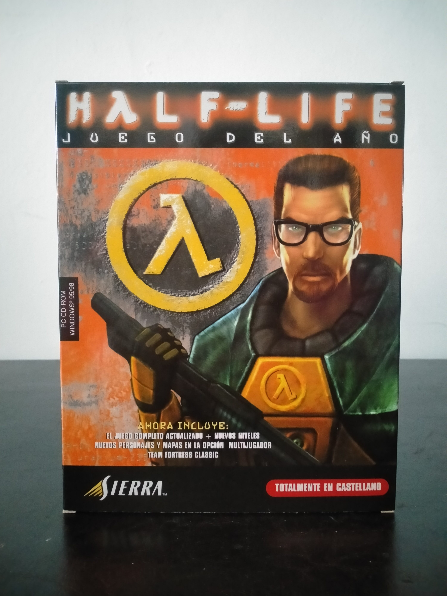

Ficha #0000114
Half-Life: Juego del Año
Half-Life: Juego del Año es la edición española de la versión Game of the Year del influyente shooter en primera persona de Valve, publicado originalmente en 1998 y convertido en una referencia absoluta del PC gaming de finales de los noventa. La obra situó al jugador en Black Mesa como Gordon Freeman y destacó por integrar narrativa, exploración, combate, inteligencia artificial y secuencias guionizadas dentro del propio flujo jugable, evitando la estructura tradicional de niveles inconexos y cinemáticas separadas. Esta edición en castellano recoge el juego completo actualizado y contenido adicional asociado a su etapa multijugador, con nuevos niveles, personajes, mapas y Team Fortress Classic, reforzando la dimensión online que Half-Life tendría antes de la transición posterior a Steam. También conserva interés técnico por su uso del motor GoldSrc, aceleración 3D mediante Direct3D/OpenGL y soporte para tecnologías de audio 3D como A3D y EAX.
- Formato
- Big Box
- Plataforma
- Win95 Win98 WinNT
- Género
- Shooter en primera persona Acción Ciencia ficción Aventura narrativa Multijugador
- Serie
- Todos Big Box
- Desarrollador
- Valve
- Distribuidor
- Sierra Studios, Coktel Educative
- EAN
- 3348542045163
Contenido de la edición
- Caja Big Box
- CD-ROM en caja jewel case
- Manual de instrucciones
- Hoja impresa de contenido y advertencia
Preservación
- Protección
- Código o clave
- Formato recomendado
- BIN/CUE
- Jugable en virtualización
- Sí
Preservación recomendada mediante imagen completa del CD-ROM en BIN/CUE y documentación de la clave de producto asociada a la edición retail, necesaria para conservar correctamente la instalación original y el contexto del multijugador WON/Steam temprano. La ejecución virtual es viable en Windows 9x/NT virtualizado o mediante configuraciones modernas compatibles, manteniendo la imagen del disco y la clave física documentadas.